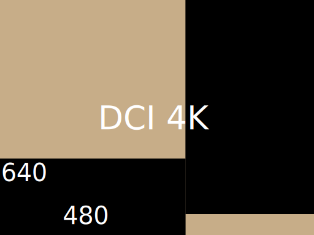

AVALON is the nickname for my camera project I started back in 2015:
After watching a movie with some amazing slow motion shots in it, I thought that this must be possible to recreate without having to spend money on the value of a car for a professional highspeed camera. As so often, the only option that was left was to build my own one...
-
Project start
-
March 2015

Nova
The Nova board was the first ever hardware that existed for the Avalon project. Its main purpose was to evaluate a FPGA-CPU interconnection. Additionally I used it to do first tests on realtime video compression algorithms.
-
August 2015

Sensor Frontend
The frontend board connects the sensors differential data lines to an highspeed board-to-board interconnection. The sensor can output data at a rate of 19.2 Gbps. Five different supply rails are required for the operation of the sensor. By using efficient switching regulators followed by LDO regulators, the overall heat dissipation could be reduced while still satisfying the sensors ripple and noise requirements. Additionally this board provides adjustable bias-voltages for the sensors internal circuitry by using low noise DAC's.
-
FPGA Board
This is the place where all the hard work takes place:
The FPGA-Board receives the data stream from the sensor board and processes it inside a Xilinx Kintex 7 FPGA. It features 2GB of onboard DDR3 Ram. Connection to the outside world is established via SDI, SATA, VGA and Ethernet. The onboard power supply provides 7 voltage rails capable of delivering up to 32 A in total. -
in progress
CPU Board
The CPU Board is currently in development.
It will feature an NXP i.MX6 dual core A9 processor. Its main task is system management: acting as a supervisor for all subsystems. Furthermore it will handle all user interactions: Display output, Button inputs, UI Overlays, Ethernet connection.
-

Results
Warning: The images shown below do by no means represent the capabilities of the final camera. They should rather be considered as a visual variation of a "Hello world".
The following test shots were taken at 640 x480 px resolution and 8 Bit pixel depth. The sensor currently mounted on the camera only shoots monochrome images, resulting in easier to debug video pipelines. The images were transfered from FPGA to PC via Ethernet using UDP and a custom application layer protocol.
The DDR3 memory controller is not working reliable yet. As a temporary workaround I switched to block-ram, wich is why I had to limit the resolution to a fraction of what is possible (pictured in the figure beside).


{kind=link}
{kind=link}
{kind=link}
{kind=link}
{kind=link}
{kind=link}

Specifications
- DCI 4K with up to 475 fps (@8bit)
- 1080p with up to 936 fps (@8bit)
- Global shutter
- 12, 10 or 8 bit pixel resolution
- 16 Stops dynamic range (In HDR Mode)
- Color or monochrome sensor
I knew that this was going to be a big project and would probably take some time. But since there are other nice things to do in life, the project sometimes is not progressing as fast as I would like to. But I enjoy myself every time I find the time to continue working on the project.